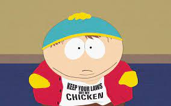
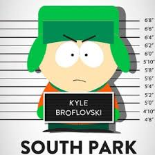
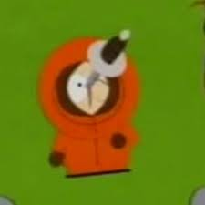

Personajes
Eric Cartman
Eric Theodore Cartman , generalmente conocido simplemente como Cartman , es uno de los personajes principales, junto con Stan Marsh , Kyle Broflovski y Kenny McCormick . Cartman es a veces el principal antagonista de un episodio, por ejemplo " Trapper Keeper ". Ninguno de los otros tres protagonistas principales realmente considera a Cartman su amigo
Kyle Broflovski
Kyle Broflovski es uno de los personajes principales de South Park , junto con Stan Marsh , Eric Cartman y Kenny McCormick . Basado en el co-creador Matt Stone , Kyle es miembro de la única familia judía en South Park. A menudo se destaca por esto, así como por su inteligencia
Stan March
Stanley "Stan" Marsh es uno de los personajes principales de South Park, interpretado en inglés por Trey Parker, es uno de los personajes principales junto con Kyle Broflovski, Kenny McCormick, Eric Cartman y Butters Stotch. Él es el más normal del grupo, muy maduro para su edad y bien intencionado. Su frase más famosa es "¡Oh Dios mío, mataron a Kenny!", a lo que su mejor amigo, Kyle, acostumbra a responder con un "¡Hijos de puta!".Es el único personaje que ha tenido una novia estable.
Kyle Broflovski
Kenneth "Kenny" McCormick, Interpretado por Matt Stone, (y Eric Stough sin capucha) es un personaje ficticio en la serie animada South Park. Es uno de los 4 personajes principales, junto con Stan Marsh, Eric Cartman y Kyle Broflovski Es famoso porque no se le entiende cuando habla, debido que la capucha de su abrigo está muy ajustada.También es conocido por morir en casi todos lo episodios, a lo cual normalmente sigue una exclamación de Stan:"¡Oh, Dios mío! ¡Mataron a Kenny!, seguido de Kyle diciendo: "¡Hijos de puta!"